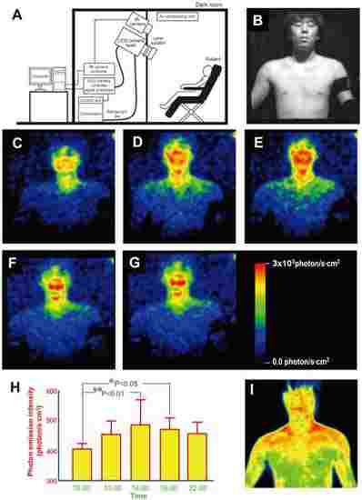

日本科学家发现人体能发出可见光 
据美国生活科学网报道，科学家发现，人体会发光，可以发出一种微弱的可见光，光的强度在一天内起伏波动。
之前的研究已经发现，身体会发光，只是比我们肉眼能看到的光的强度弱1000倍。事实上，所有生物都会发出非常微弱的光，它被认为是自由基参与生物化学反应的结果。这种可见光不同于红外线，红外线不是可见光，它来自体热。
为了进一步了解这种微弱的可见光，日本科学家使用了能检测到单光子的超敏摄像机。5名20多岁的健康男性被安排连续3天，每天从上午10点到晚上10点，每隔3小时上身赤裸站在摄像机前20分钟，房间不透光，一片漆黑。研究人员发现，身体发光强度在一天内起起伏伏，发光最弱的时候是上午10点，发光最强的时候是下午4点，之后逐渐变弱。这些发现显示，发光和我们的生物钟有关，最可能与我们的代谢节律在一天中的波动状况有关。
面部发光比身体其他部位发出的光更多。这可能是因为面部比身体的其他部位日晒更多，它们接受了更多的阳光照射，肤色中的黑色素有荧光成分，这可能会增加光的“产量”。
日本京都大学生理节奏生物学家冈村仁表示，既然这种微弱的光与身体代谢有关，那么这些发现显示，能拍到这种微弱光的摄像机可能有助于发现一些医学问题。日本仙台东北工业大学生物医学光子学专家小林正树说：“如果你能看到身体表面发出的光，你就能看到身体的整体状况。